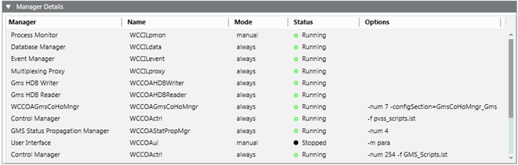

Manager Details Expander
It lists all the managers that are configured in a project along with their status.

Before starting the Installed Client or Windows App Client, it is recommended to wait until all the managers of a project except for the managers with manual mode (excluding the process monitor manager), are running. A manager in red with a project status stopped – inconsistent progs file (in red) indicates that the progs file is corrupt. Check the Smc.log file located at
[installation drive :]\[installation folder]\GMSMainProject\log.
Manager Details Expander | |
Item | Description |
Manager | Description of a manager |
Name | Name of the manager |
Mode | Displays the following modes: |
Status | Displays the following statuses: |
Options | Displays manager parameters associated with a manager. |